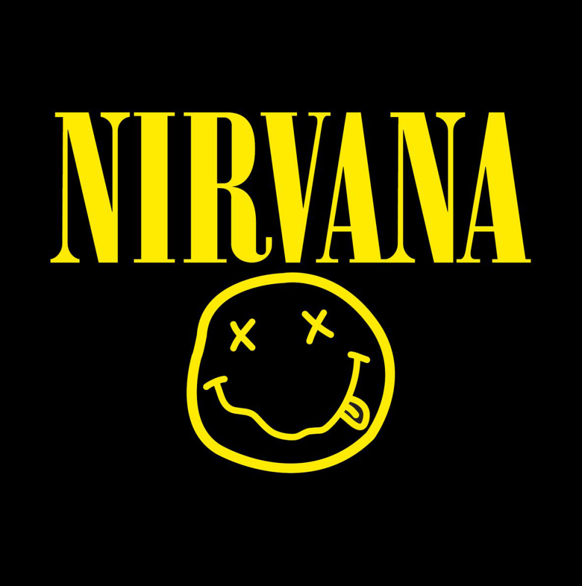
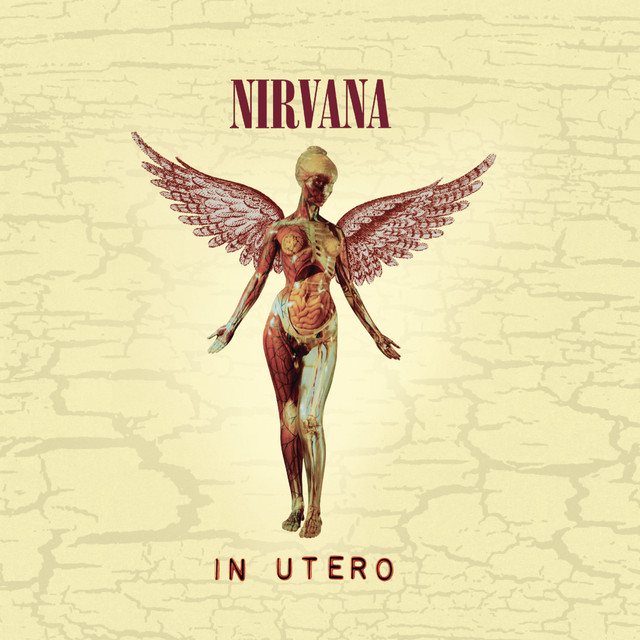
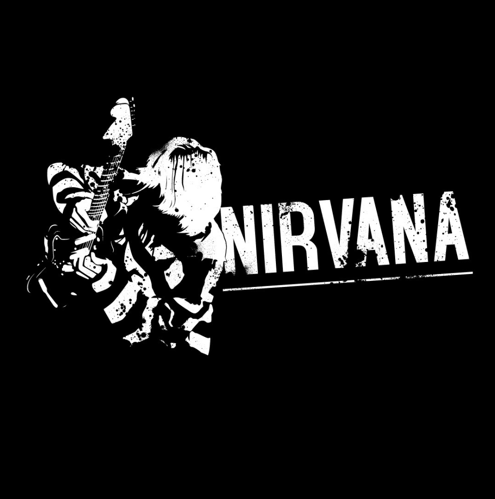
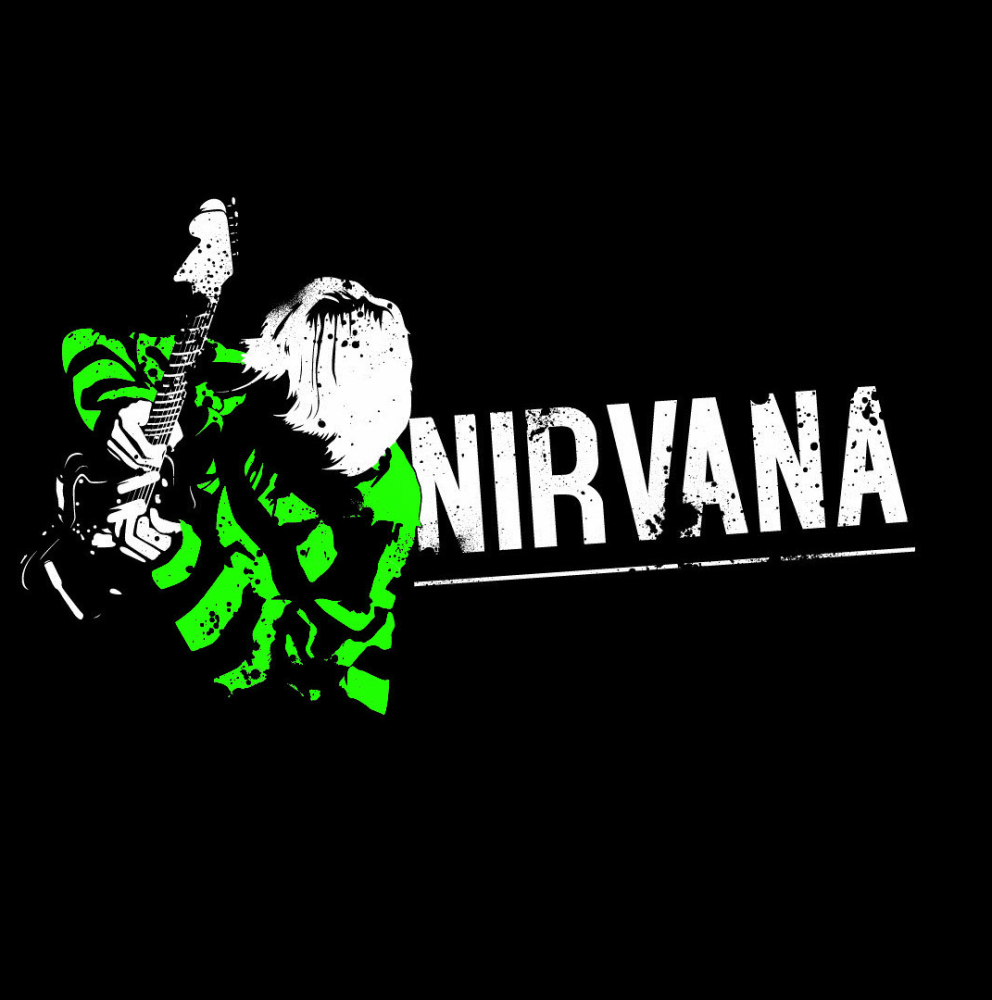

|  |
Come As You AreNirvanaA repetição do verso 'Come as you are, as you were, as I want you to be' sugere uma aceitação incondicional do outro, seja como amigo ou até mesmo como um 'velho inimigo'. |
|  |
DumbNirvanaDe acordo com Kurt Cobain, "Dumb" foi inspirada pela inveja que ele sentia das pessoas simples e sempre bem dispostas que aparentemente passam pela vida sem que alguma vez se sintam tristes ou deprimidas |

|
Rape MeNirvanaKurt Cobain concebeu "Rape Me" como uma canção anti-estupro de afirmação da vida. Ele disse a Spin, "É como se ela estivesse dizendo: 'Me estupre, vá em frente, pode me estuprar, me bater. Você nunca vai me matar. Eu vou sobreviver a isso e eu vou te estuprar um dia desses sem que você ao menos saiba'. |
|  |
Smells Like Teen SpiritNirvanaO refrão 'Here we are now, entertain us' pode ser interpretado como uma crítica irônica à expectativa de que a juventude seja passiva e facilmente entretida por uma cultura de massa superficial. |
|  |
Something In The WayNirvanaO refrão 'Something in the way' (Algo no caminho) é repetido várias vezes, criando um mantra que evoca a sensação de um obstáculo intransponível, uma barreira emocional ou física que impede o avanço |